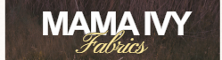
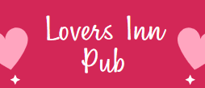
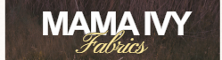
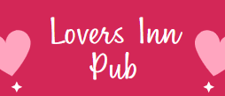

Sis3aCARE, founded in 2024, is a non-profit organization committed to bridging educational gaps in underprivileged schools. We empower students, support teachers, and engage communities by providing essential learning materials, promoting digital inclusion, and fostering safe, supportive environments. Our work focuses on disadvantaged children and schools, with a special commitment to girls’ education and community-driven development
.jpg)
Provided mathematical sets and stationery to support students of Akpafu Todzi JHS, Santrokofi Gbodome JHS, Lolobi Ashiambi JHS, and Likpe Koforidua JHS, helping them prepare confidently for their BECE examinations.
Learn More.JPG)
Bringing together students and youth from Lolobi Ashiambi, Lolobi Kumasi, and New Baika through a two-day football gala, fostering teamwork, sportsmanship, and community unity.
Learn More
Supporting Lolobi Ashiambi RC Primary School with dustbins to promote sanitation, environmental awareness, and a healthier learning environment for students.
Learn More21. May 2025
The project began with identifying beneficiary schools — Akpafu Todzi JHS, Santrokofi Gbodome JHS, Lolobi Ashiambi JHS, and Likpe Koforidua JHS. Partnerships were formed, and examination materials such as math sets, pens, rulers, and exercise books were procured.
30. May 2025
Materials were delivered to the schools in collaboration with school administrations and community leaders. Students received the items in preparation for the BECE, ensuring transparency and inclusivity throughout the distribution process.
14. July 2025
The donation directly supported over 100 students, boosting their confidence and preparedness for exams. Feedback from teachers and students highlighted the positive impact, laying the foundation for continued educational support initiatives.
 


